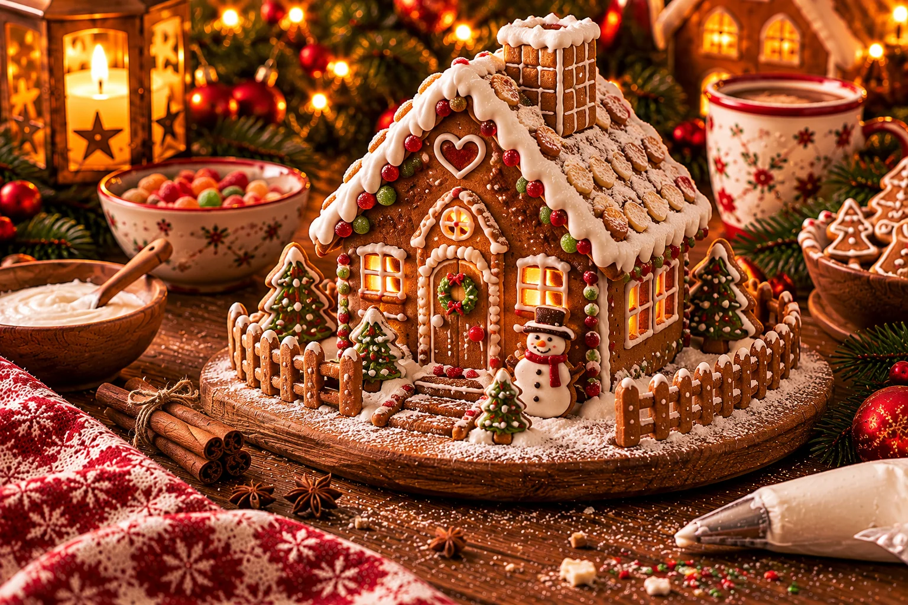

La casita de jengibre mágica de Miguitas
Hornead, montad y decorad juntos una casita navideña de jengibre.

De la masa a una casita festiva, paso a paso.
Prepara tu casita de jengibre
- Preparar la mezcla de miel
Calentar la miel, el azúcar, el azúcar vainillado y la mantequilla o margarina, removiendo hasta integrar. Dejar enfriar.
- Preparar y enfriar la masa
Mezclar la harina y la levadura química. Amasar con el aroma navideño, los huevos y la mezcla de miel fría. Tapar y refrigerar unas dos horas.
- Preparar el horno y las plantillas
Precalentar el horno a 180 °C, calor arriba y abajo. Forrar las bandejas con papel de horno. Preparar las plantillas de paredes y tejado.
- Recortar las piezas
Extender la masa por tandas hasta unos 5 mm de grosor. Recortar paredes y tejado siguiendo las plantillas. Si se desea, abrir puerta y ventanas.
- Hornear las piezas
Pincelar ligeramente con leche y hornear unos 15 minutos por bandeja. Dejar enfriar por completo.
- Hornear la base
Extender la masa restante y recortar una base rectangular de 24 × 21 cm, uniendo las dos partes de la plantilla A4 impresa al 100 %. Hornear y dejar enfriar completamente.
- Montar la casita
Tamizar el azúcar glas y mezclarlo con la clara hasta obtener un glaseado muy firme. Unir las paredes sobre la base y después colocar el tejado. Sujetar las piezas hasta que el glaseado las mantenga firmes.
- Decorar la casita
Cuando esté estable, decorar con glaseado, lápices de azúcar, virutas y grageas de chocolate. Espolvorear azúcar glas al gusto y dejar secar bien.
Plantillas y montaje
Deja enfriar por completo las paredes y las piezas del tejado. Comprueba las medidas de las plantillas impresas antes del montaje. Aplica glaseado real espeso en los bordes, une las paredes sobre la base y sujétalas hasta que queden firmes. Coloca el tejado cuando las paredes se sostengan solas y deja secar antes de decorar.
Imprime las plantillas al 100 %. Comprueba la línea de calibración de 50 mm antes de recortar.
Seguridad en familia
Los adultos deben encargarse de la mezcla de miel caliente, el horno, los utensilios afilados y el montaje. No probar la masa cruda. Para el glaseado, usar preferiblemente clara pasteurizada y comprobar su firmeza.
El ajuste de las plantillas y la estabilidad de la casita terminada todavía no se han probado en la práctica. Esta es una versión de prueba.